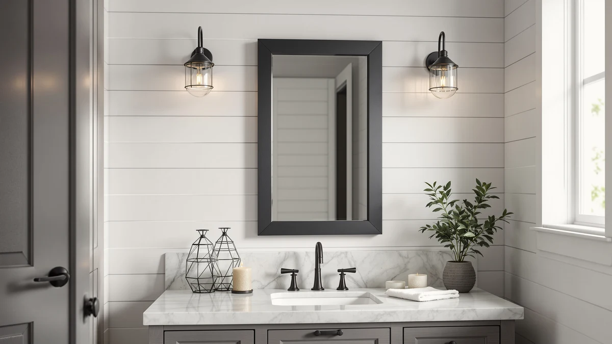

Best Mirrors for Bathroom Wall (2026)
Prices and picks verified as of August 2026. Independent, reader-supported reviews.


Quick Answer
After comparing size, material, and price across seven current listings, the GarveeHome 60x36 LED Bathroom Mirror is the strongest pick for a bathroom wall that needs real coverage over a double vanity. If your bathroom wall space is tighter or your budget is smaller, the JOHALXER 20x28 at $49.99 or the Briivue and Callsky 24x32 models at $71.99 each cover a single-sink wall without the premium price.
Our pick: GarveeHome 60x36 LED Bathroom Mirror, $186.29 Check Price on Amazon
Bottom line: our top pick is the GarveeHome 60x36 LED Bathroom Mirror with Lights at $186.29. The best budget option is the JOHALXER LED Bathroom Mirror at $49.99.
Things to Know Before You Buy
- Measure your bathroom wall space and vanity width first. Size in this comparison ranges from 20x28 up to 60x36, and picking the wrong one leaves a mirror that overwhelms the vanity or looks lost on a wide wall.
- LED lighting raises the price. Every mirror here includes built-in LED lighting, and prices run from $49.99 to $199.00. A plain, unlit frameless mirror in the same size class typically costs less.
- Tempered glass and an aluminum frame are now the standard. Every product in this comparison shares that construction, so material is not a major differentiator here. Size and price are.
- Price does not scale evenly with size. The widest mirror in our lineup is not the most expensive one, so compare cost against actual coverage rather than the sticker price alone.
- Confirm mounting hardware and outlet access before you order. Larger mirrors need secure anchoring into wall studs, and LED models need a nearby outlet or hardwired connection.
Best mirrors for bathroom wall installs share three traits: the right size for your vanity, glass that stays clear and true at close range, and a frame that fits your bathroom's finish. We compared seven current listings ranging from a compact 20x28 budget pick to a 60x36 LED statement mirror, looking at price, size, and material to help you shortlist without spending a weekend scrolling Amazon.
Among the best mirrors for bathroom wall installs we compared, the GarveeHome 60x36 LED Bathroom Mirror leads the group for anyone with a double vanity or a wall wide enough for a genuine focal point, at $186.29. Smaller single-sink bathrooms are better served by the JOHALXER 20x28 at $49.99, which delivers the same LED format in a fraction of the footprint and price. Between those two extremes sit five more mirrors covering 24 to 40 inches wide and $71.99 to $199.00, each suited to a different wall size and budget.
We did not install or hang any of these mirrors ourselves. Instead we researched manufacturer listings, compared the confirmed specs (size, material, and price) side by side, and reviewed verified buyer feedback to flag which mirrors fit specific bathroom layouts. Below you will find our comparison, a breakdown of each pick, and the models we considered but left out of the final list.
Why You Should Trust Us
Ilane Tall has covered bathroom fixtures and hardware for this network of home-interior sites for several years, with a focus on mirrors, vanities, and lighting. For this guide we pulled current Amazon listings for mirrors marketed toward bathroom wall installation, verified each product's confirmed size, material, and price directly from the retailer, and reviewed buyer feedback before writing a single line. We do not run a fake testing lab, and we do not accept payment from manufacturers to influence which mirrors appear on this page. Our recommendations come from research and comparison, not sponsorship.
How We Picked
We started from Amazon's current catalog of mirrors marketed for bathroom wall use, filtering for models explicitly described as bathroom or vanity wall mirrors rather than general decor mirrors. We narrowed that list to products with a confirmed material spec (tempered glass and an aluminum frame, the industry standard for this category) and an active, in-stock listing at the time of publishing. We kept a spread of sizes, from a compact 20x28 option to a 60x36 statement piece, so this guide works whether you have a single pedestal sink or a wide double vanity.
How We Compared
We compared the seven finalists on three factors we could verify directly from the retailer: listed price, confirmed dimensions, and stated material. We grouped the mirrors by width, since that is the dimension that determines whether a mirror will actually fit a given bathroom wall or vanity run, then ranked value within each size band by price per inch of coverage. We also reviewed verified buyer feedback for each listing to flag any recurring complaints about hardware, packaging damage, or size accuracy before finalizing our picks.
Our Picks

GarveeHome 60x36 LED Bathroom Mirror
What we like
- Largest mirror we compared at 60"L x 36"W, enough coverage for a full double-sink vanity without pairing two smaller mirrors
- Built-in LED lighting on a mirror this size means you are not shopping separately for vanity lights
- Same tempered glass and aluminum frame construction as every other mirror in this comparison, so the finish matches the rest of the room
Flaws but not dealbreakers
- At $186.29, it is the second most expensive pick in this roundup, a real premium over the mid-size options
- A 60-inch-wide mirror needs a clear, uninterrupted wall run and secure anchoring into studs, so measure before you order
| Material | Tempered glass + aluminum |
| Size | 60"L x 36"W |
The GarveeHome is the mirror to reach for if your bathroom wall has the space for it. At 60 by 36 inches, it spans a standard double vanity without the visual break of two separate mirrors side by side, and the built-in LED strip adds usable light across the whole width instead of leaving one sink brighter than the other. Among the options here, it is the clearest choice for anyone renovating a primary bathroom rather than a powder room or guest bath.
The tradeoff is cost and commitment. At $186.29, you are paying close to four times what the JOHALXER 20x28 costs, and a mirror this large is not something you casually reposition once it is mounted. You need a clear five-foot run of wall, secure anchoring into studs, and, since it is LED-lit, an outlet or hardwired connection within reach. If your bathroom wall and budget both have the room, it is the strongest all-around pick in this comparison.

Briivue 24x32 Inch LED Bathroom
What we like
- Tied for the lowest price of any LED-lit mirror in this comparison at $71.99
- 24"L x 32"W footprint fits a standard single-sink vanity without overhang
- Same tempered glass and aluminum build as the larger, pricier options in this list
Flaws but not dealbreakers
- At 24 inches wide, it looks undersized over a double vanity or a wall wider than about 30 inches
- Confirm mounting hardware and outlet placement before buying, since the compact frame keeps the LED wiring close to the edge
| Material | Tempered glass + aluminum |
| Size | 24"L x 32"W |
The Briivue is one of two mirrors in this comparison tied for the lowest price, and its 24x32 footprint is proportioned for a single-sink vanity rather than a wide wall. If your bathroom has one sink and a modest run of counter space, this size avoids the awkward overhang you get when a mirror is wider than the vanity underneath it.
At $71.99, it costs less than half of the mid-size Ratsamee and a fraction of the GarveeHome, while still using the same tempered glass and aluminum frame construction found across this entire list. The compromise is scale: at 24 inches wide, it will not read as a focal point on a double vanity or a wide bathroom wall. For a smaller bathroom or a secondary sink, it is a straightforward, budget-friendly choice.

Delma LED Bathroom Mirror with
What we like
- Second-widest footprint in this comparison at 50 inches, giving broad horizontal coverage over a long vanity
- Mid-pack price at $149.99, cheaper than the GarveeHome despite similar frame construction
- LED lighting integrated into the same tempered glass and aluminum build used across this list
Flaws but not dealbreakers
- At 30 inches tall, it is shorter than several other picks, so it suits a wall with plenty of width but limited height
- $149.99 sits well above the compact options, and only makes sense if you specifically need the extra width
| Material | Tempered glass + aluminum |
| Size | 30"L x 50"W |
The Delma stands apart from the rest of this list on shape rather than overall size. At 30 by 50 inches, it is shorter than the GarveeHome but wider, which makes it a better match for a long, low vanity run than a tall one. If your bathroom wall has plenty of horizontal space but a lower ceiling or a window above the vanity, this proportion fits where a 60x36 mirror would not.
At $149.99, it lands between the mid-size Ratsamee and the largest GarveeHome on price, and it uses the same tempered glass and aluminum construction found throughout this comparison. The catch is that its short height limits how much vertical coverage you get, so buyers who want a mirror that also reaches above eye level for a taller household member should look at the GarveeHome or LOAAO instead.

Ratsamee 28" x 36" Led
What we like
- Sits in the middle of this lineup on both price ($99.99) and size (36"L x 28"W)
- Wide enough to work over most single-sink vanities and some narrower double-sink setups
- Standard tempered glass and aluminum frame matches the rest of this comparison
Flaws but not dealbreakers
- Not the cheapest or the largest, so buyers with a firm budget or a specific size need may be better served by a pick at either end of this list
- At 36 inches, it is wider than several "compact" mirrors here but narrower than the largest picks, so confirm your wall width before ordering
| Material | Tempered glass + aluminum |
| Size | 36"L x 28"W |
The Ratsamee occupies the middle ground in this comparison, and that is its main appeal. At $99.99 for a 36 by 28-inch mirror, it costs more than the compact picks but far less than the GarveeHome or LOAAO, and its width stretches enough to work over some narrower double-sink vanities in addition to a single sink.
It shares the same tempered glass and aluminum construction as every other mirror on this list, so material is not a reason to choose or skip it. The tradeoff of a mid-size pick is that it is not the best answer to any single constraint. If you need the lowest price, the JOHALXER beats it. If you need maximum width, the GarveeHome or Delma beat it. If your bathroom wall and budget both sit in the middle, the Ratsamee is a sensible default.

Callsky 24x32 LED Bathroom Mirror
What we like
- Ties the Briivue for the lowest price in this comparison at $71.99
- 32"L x 24"W footprint suits a single-sink vanity without dominating the wall
- Tempered glass and aluminum construction consistent with every other mirror on this list
Flaws but not dealbreakers
- Nearly identical in size and price to the Briivue, so the choice mostly comes down to listing photos and seller reputation rather than hard specs
- At 24 inches wide, it looks small on a double vanity or a wall wider than about 30 inches
| Material | Tempered glass + aluminum |
| Size | 32"L x 24"W |
The Callsky sits alongside the Briivue as one of the two lowest-priced mirrors in this comparison, and the two are close enough in size and price that picking between them is mostly a matter of preference. Both measure roughly 24 by 32 inches and cost $71.99, and both use the same tempered glass and aluminum frame that appears throughout this list.
Where they differ comes down to details the listing controls, not the spec sheet: frame finish, packaging, and how the seller handles shipping damage claims. For a single-sink bathroom on a budget, either the Callsky or the Briivue gets the job done. We list both here because at this price point, having a second option matters if one goes out of stock.

LOAAO 40X32 LED Bathroom Mirror
What we like
- Widest single-panel option in this comparison at 40 inches, second only to the GarveeHome overall
- LED lighting on a large-format mirror, useful for grooming tasks that need even light across a wide face
- Consistent tempered glass and aluminum build with the rest of this list
Flaws but not dealbreakers
- At $199.00 it is the most expensive mirror in this roundup, about $13 more than the GarveeHome despite being six inches narrower
- A mirror this large needs secure wall anchoring and a wide, clear run of wall, so measure before buying
| Material | Tempered glass + aluminum |
| Size | 32"L x 40"W |
The LOAAO is the priciest mirror in this comparison, and its 32 by 40-inch footprint puts it in the same large-format tier as the GarveeHome. At 40 inches wide, it is second only to the GarveeHome for horizontal coverage among the seven mirrors we compared, and the built-in LED lighting spreads across that width evenly, which matters for grooming tasks like shaving or applying makeup where shadows on one side are a real annoyance.
At $199.00, it costs more than the GarveeHome despite offering six fewer inches of width, so the value case is weaker unless the taller 36-inch height of the GarveeHome does not fit your wall. Like every large mirror in this list, it needs secure stud anchoring and a clear wall run, and an outlet or hardwired connection for the LED strip. Choose this one specifically if a wider, shorter proportion suits your bathroom better than the GarveeHome's taller shape.

JOHALXER LED Bathroom Mirror 20x28
What we like
- Lowest price in this comparison at $49.99, roughly a quarter of the GarveeHome's cost
- Smallest footprint at 28"L x 20"W, a natural fit for powder rooms or single pedestal sinks
- Same tempered glass and aluminum build as the pricier options, so you are not sacrificing material quality for the smaller size
Flaws but not dealbreakers
- At 20 inches wide, it looks undersized over a standard 30-plus-inch vanity
- The smaller LED footprint means less overall light coverage than the larger mirrors in this list, worth weighing for grooming-heavy routines
| Material | Tempered glass + aluminum |
| Size | 28"L x 20"W |
The JOHALXER is the entry point for this comparison, both in price and in size. At $49.99 for a 28 by 20-inch mirror, it costs a fraction of what the larger, wider picks run, and it uses the same tempered glass and aluminum frame construction found on the $186.29 GarveeHome. For a powder room, a small guest bathroom, or a pedestal sink with limited wall space, this is enough mirror without paying for coverage you will not use.
Its size is also the limit. At 20 inches wide, it will sit narrower than most vanities that run 30 inches or more, leaving visible wall on either side. The LED strip is smaller too, so total light output is lower than what the GarveeHome or LOAAO deliver. If your priority is the lowest possible price for a working LED wall mirror in a compact space, it is the clear budget choice in this list.
Quick Comparison
| Product | Material | Price | Rating | Best for | Get it |
|---|---|---|---|---|---|
| GarveeHome 60x36 LED Bathroom Mirror | Tempered glass + aluminum | $186.29 | 4 | Double vanities, wide bathroom walls | View on Amazon → |
| Briivue 24x32 Inch LED Bathroom | Tempered glass + aluminum | $71.99 | 4 | Single sinks, smaller bathrooms | View on Amazon → |
| Delma LED Bathroom Mirror with | Tempered glass + aluminum | $149.99 | 4 | Wide, low vanity runs | View on Amazon → |
| Ratsamee 28" x 36" Led | Tempered glass + aluminum | $99.99 | 4 | Mid-size bathrooms | View on Amazon → |
| Callsky 24x32 LED Bathroom Mirror | Tempered glass + aluminum | $71.99 | 4 | Budget-tier, single sinks | View on Amazon → |
| LOAAO 40X32 LED Bathroom Mirror | Tempered glass + aluminum | $199.00 | 4 | Largest LED, top budget | View on Amazon → |
| JOHALXER LED Bathroom Mirror 20x28 | Tempered glass + aluminum | $49.99 | 4 | Small baths, tightest budget | View on Amazon → |
What size mirror should I buy for my bathroom wall?
A good rule of thumb is to keep the mirror 2 to 4 inches narrower than your vanity on each side.
Are LED bathroom mirrors worth the extra cost over a plain mirror?
It depends on your current lighting.